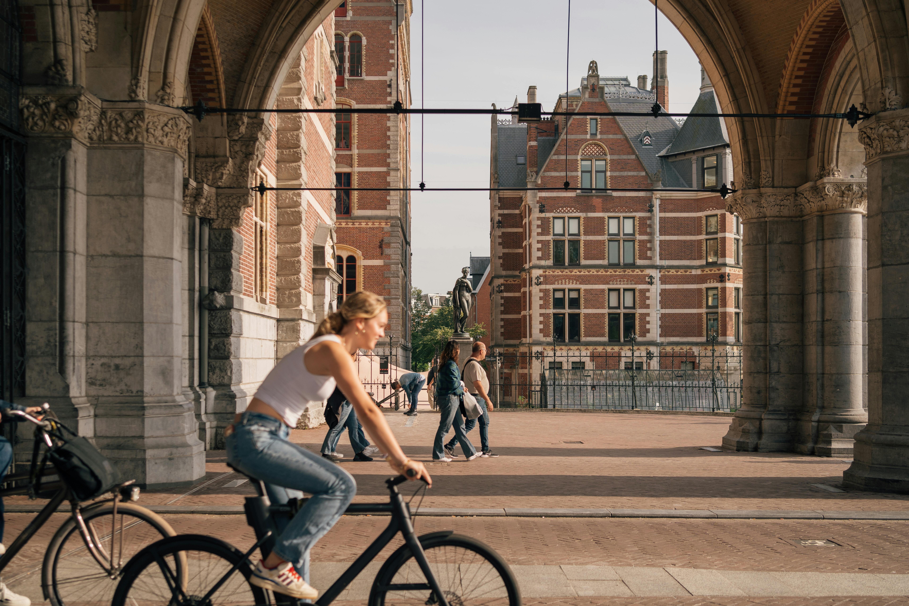

El Casco de Bicicleta: Tu Compañero Esencial en la Seguridad
El casco de bicicleta es un componente esencial para la seguridad de los ciclistas. Su principal función es proteger la cabeza en caso de caídas o colisiones, reduciendo así el riesgo de lesiones graves en el cráneo y el cerebro. La cabeza es una de las partes más vulnerables del cuerpo humano, y una lesión en esta área puede tener consecuencias graves y potencialmente fatales. Un casco adecuado puede marcar la diferencia entre un susto sin consecuencias y una tragedia
Un casco de bicicleta típico consta de varias capas diseñadas para absorber y disipar la energía del impacto. La capa exterior, generalmente hecha de policarbonato o fibra de vidrio, proporciona resistencia contra objetos punzantes y daños externos. La capa intermedia consiste en una espuma de absorción de impactos que minimiza la fuerza transferida al cráneo. Por último, la capa interna, fabricada en espuma EPS, es la encargada de absorber la mayor parte de la energía del impacto, protegiendo el cerebro del ciclista. En una caída o colisión, estas capas trabajan juntas para disipar gradualmente la energía cinética, reduciendo así la fuerza del impacto en la cabeza y el cerebro. Esto es esencial para prevenir lesiones graves como fracturas craneales, conmociones cerebrales o lesiones cerebrales traumáticas.